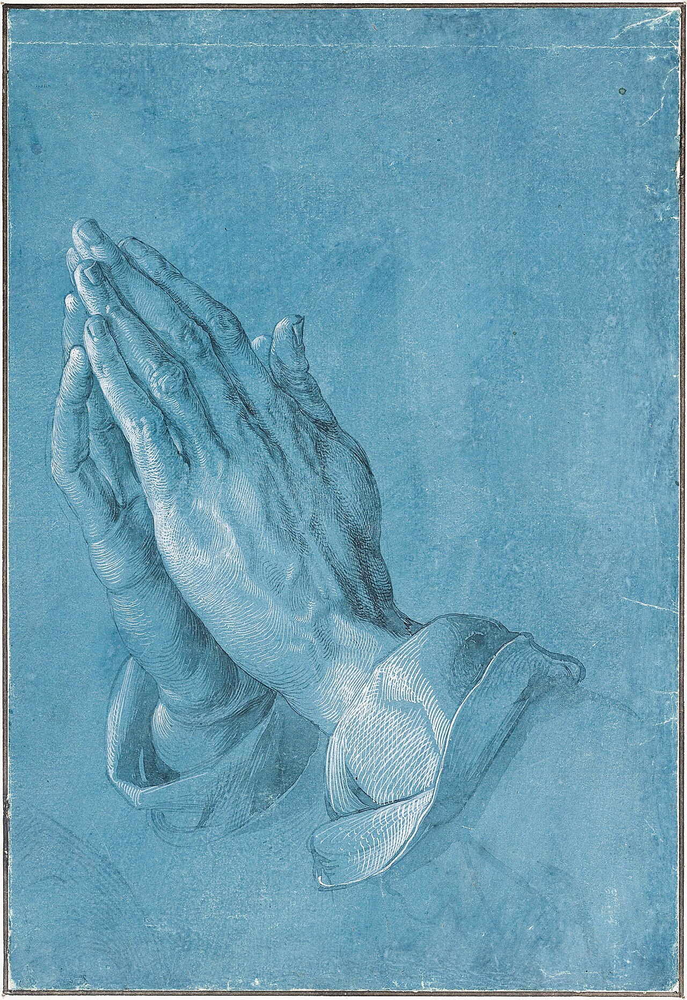

- 作家
- アルブレヒト・デューラー
- 作品
- 祈る手
- 制作年
- 1508年
- 媒体
- 青く地塗りした紙に灰色・黒の筆描、灰色の淡彩、不透明な白によるハイライト
- 所蔵
- アルベルティーナ美術館、ウィーン（Inv. 3113）

まず、手の甲から袖口へ
手の甲の白い細線を、指の付け根から手首へ追ってみる。線は輪郭をなぞるだけでなく、曲面に沿って方向を変えている。次に袖口へ目を移すと、線は布の折れ曲がりやふくらみに応じてまとまる。同じ白でも、皮膚と布で触った感じが違って見える。ここは画像からの鑑賞の手がかりだ。
祭壇画の一部を準備した紙
所蔵館の作品解説は、この手を《ヘラー祭壇画》でひざまずく使徒の手と結びつけている。使徒の頭の素描も、もとは同じ横長の一枚に描かれていた。いまの「手だけ」の姿が、最初からの紙の全体だったわけではない。
工房の「実力見本」という読み
一方、2019年の同館展覧会資料は、学芸員クリストフ・メッツガーの研究を紹介する。《祈る手》のように色つきの紙と強い明暗を使う素描を、工房の来訪者に描写力を示す独立した見本と捉える読みだ。これはデューラー自身の説明ではなく、研究者による位置づけ。所蔵品ページには祭壇画との関係を重視する説明も残るので、「下絵説が完全に否定された」と覚えるのは早い。
もう一度、白い線を見る
祈る身振りを表す絵として見たあと、今度は「ここまで描ける」と見せる絵として眺める。題材と技術、二つの入口ができると、よく知った手の絵が少し違って見えてくる。
資料をたどる
- ALBERTINA｜Praying Hands ↗作品情報・画像、祭壇画との関係。
- ALBERTINA｜Dürer展プレス資料（2019年） ↗PDF5頁。メッツガーによる、工房で描写力を示す見本という解釈。
- Wikimedia Commons｜掲載画像と利用条件 ↗PD-Art / Public Domain。二次元作品の忠実な複製。
確認日：2026年11月7日。リンク先の記事・作品解説を参照し、この読み物として要約・構成しています。全文転載ではありません。新しい資料や訂正が見つかった場合は、このページに追記します。